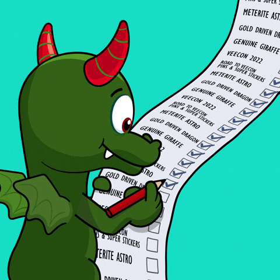
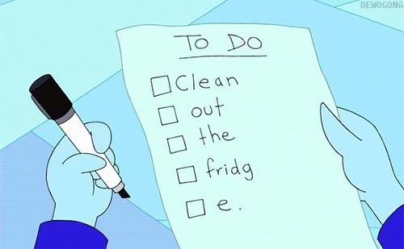

Simple, straightforward,and super powerful
What Can a To-Do List Do for You? 🎯
1. Organize Your Day
Keep all your tasks in one place and bring clarity to your day.
Plan what needs to be done and stay in control of your time.
A simple list can turn a busy day into a clear plan.

2. Stay Focused
Focus on what matters most without letting distractions slow you down.
Take your tasks one at a time and keep moving forward.
Small steps every day can lead to big results.

3. Achieve Your Goals
Turn your bigger goals into simple, actionable tasks.
Track your progress, complete your tasks, and celebrate every step.
Stay consistent and make your plans a reality.